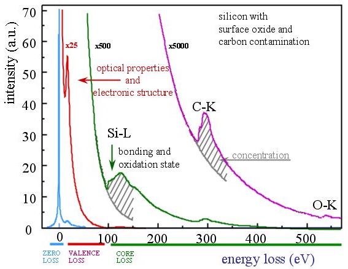
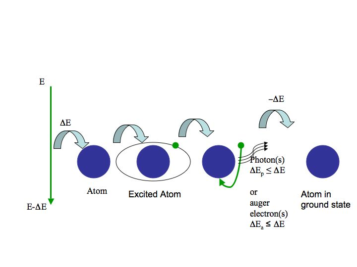
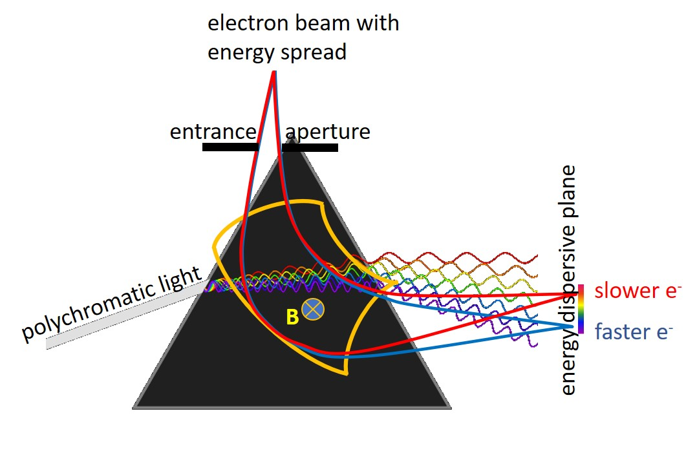
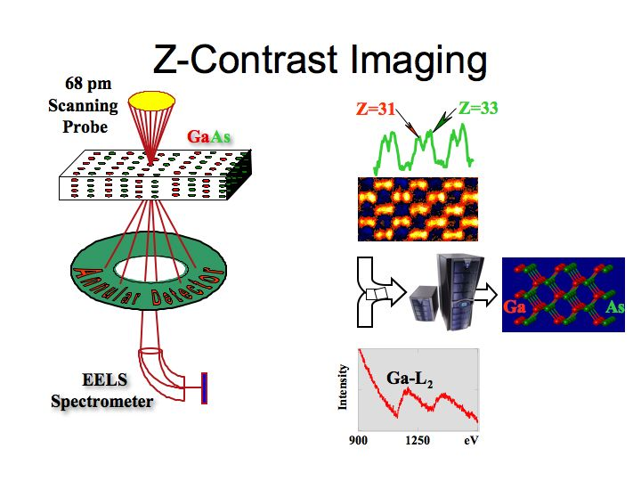

Chapter 4: Spectroscopy
Introduction to Electron Energy-Loss Spectroscopy¶

part of
MSE672: Introduction to Transmission Electron Microscopy
by Gerd Duscher, Spring 2026
Microscopy Facilities Institute of Advanced Materials & Manufacturing Materials Science & Engineering The University of Tennessee, Knoxville
Background and methods to analysis and quantification of data acquired with transmission electron microscopes.
Preliminaries¶
Check Installed Packages¶
[1]:
import sys
import importlib.metadata
def test_package(package_name):
"""Test if package exists and returns version or -1"""
try:
version = importlib.metadata.version(package_name)
except importlib.metadata.PackageNotFoundError:
version = '-1'
return version
if test_package('pyTEMlib') < '0.2026.1.0':
print('installing pyTEMlib')
!{sys.executable} -m pip install --upgrade pyTEMlib -q
print('done')
done
Import all relevant libraries¶
Please note that the EELS_tools package from pyTEMlib is essential.
[9]:
import sys
%matplotlib widget
if 'google.colab' in sys.modules:
from google.colab import output
from google.colab import drive
output.enable_custom_widget_manager()
import matplotlib.pylab as plt
import numpy as np
# Import libraries from the book
import pyTEMlib
# For archiving reasons it is a good idea to print the version numbers out at this point
print('pyTEM version: ',pyTEMlib.__version__)
pyTEM version: 0.2026.1.3
Introduction¶
Parts of an EELS Spectrum:¶

No energy transfer
The zero–loss peak is caused by electrons of the acceleration energy which apparently did not loose any energy (or only a tiny amount in a quasi–elastic scattering).
Little energy transfer: 1-70 eV
The valence–loss region shows intraband, interband, and plasmon transitions.
High energy transfer: above 70eV
The core–loss region contains excitation from the atom core levels into the conduction band appear as saw tooth like edges.
Inelastic Excitation¶
Energy is transfered to an atom in ground state and after a while (femto seconds) this atoms will change its electron levels and shell occupations and becomes an excited atom.

After some time (femto seconds to minutes) this atoms falls back to the ground state and after a little while longer (femto seconds), the atom emits this energy either in form of photons (in the light and X-ray spectrum) or Auger electron.
So we have two obervable processes:
energy transfer to the atom in ground state
primary energy transfer - electron energy-loss spectroscopy
excited atom emitting energy
secondary processes - electron energy-loss spectroscopy - Auger spectroscopy - energy-dispersive X-ray spectroscopy - Cathodoluminescence
EELS Spectrometer¶
We use a magnetic field to bend the electron beam (here 90\(^{\rm o}\)) which acts like a prism for light and separates the electrons by spead (kinetic energy). The faster electrons will get bent less.

With such a prism for electrons we can determine the energy lost in the sample.
EELS and STEM¶
The advantage of EELS in STEM mode is that we get a HAADF signal and the bright field signal is analysed with EELS spectroscopy. So we get spatially resolved image and chemical information simultaneously.

Load an EELS Spectrum¶
[10]:
# ---- Input ------
load_example = True
# -----------------
if not load_example:
if 'google.colab' in sys.modules:
drive.mount("/content/drive")
fileWidget = pyTEMlib.file_tools.FileWidget()
[11]:
# ---- Input ------
load_example = True
file_name = 'AL-DFoffset0.00.dm3'
# -----------------
if load_example:
if 'google.colab' in sys.modules:
if not os.path.exists('./'+file_name):
!wget https://github.com/gduscher/MSE672-Introduction-to-TEM/raw/main/example_data/AL-DFoffset0.00.dm3
else:
datasets = pyTEMlib.file_tools.open_file('../example_data/'+file_name)
eels_dataset = datasets['Channel_000']
else:
datasets = fileWidget.datasets
eels_dataset = fileWidget.selected_dataset
view = eels_dataset.plot()
frames: Number of frames
Important Parameters in an EELS spectrum¶
A lot of information is stored in the original_metadata.
We will learn in this Spectroscopy section of the lecture which ones are absolutely necessary.
[12]:
eels_dataset.view_original_metadata()
ImageData :
Calibrations :
Brightness :
Origin : 0.0
Scale : 1.0
Units : Counts
Dimension :
0 :
Origin : 179.33062744140625
Scale : 0.0201262179762125
Units : eV
DisplayCalibratedUnits : 1
Data : read
DataType : 2
Dimensions :
0 : 2048
PixelDepth : 4
ImageTags :
Acquisition :
Device :
Active Size (pixels) : [2048, 2048]
Camera Number : 0
CCD :
Pixel Size (um) : [14.0, 14.0]
Configuration :
Transpose :
Diagonal Flip : 0
Horizontal Flip : 1
Vertical Flip : 0
Name : US1000XP 1
Source : US1000XP 1
Frame :
Area :
Transform :
Class Name : cm_acquisitiontransform_list
Transform List :
0 :
Binning : [1, 1]
Class Name : cm_acquisitiontransform
Sub Area Adjust : [0, 0, 0, 0]
Transpose :
Diagonal Flip : 0
Horizontal Flip : 1
Vertical Flip : 0
CCD :
Pixel Size (um) : [14.0, 14.0]
Intensity :
Transform :
Class Name : cm_valuetransform_list
Transform List :
0 :
Class Name : cm_valuetransform_affine
Offset : 250.0
Scale : 1.0
1 :
ADC Max : 65535.0
ADC Min : 0.0
Class Name : cm_valuetransform_adc
Parameters :
Acquisition Write Flags : 4294967295
Base Detector :
Class Name : cm_namedcameradetectorparameterset
Name : default
Detector :
continuous : 1
exposure (s) : 0.1
hbin : 1
height : 2048
left : 0
top : 0
vbin : 1
width : 2048
Environment :
Mode Name : Spectroscopy
High Level :
Acquisition Buffer Size : 0
Antiblooming : 0
Binning : [1, 1]
CCD Read Area : [0, 0, 2048, 2048]
CCD Read Ports : 1
Choose Number Of Frame Shutters Automatically : 1
Class Name : cm_camera_highlevelparameters
Continuous Readout : 1
Corrections : 817
Corrections Mask : 817
Exposure (s) : 0.1
Number Of Frame Shutters : 1
Processing : Gain Normalized
Quality Level : 1
Read Frame Style : 0
Read Mode : 0
Secondary Shutter Post Exposure Compensation (s) : 0.0
Secondary Shutter Pre Exposure Compensation (s) : 0.0
Shutter :
Primary Shutter States : 0
Primary Shutter States Mask : 0
Secondary Shutter States : 0
Secondary Shutter States Mask : 0
Shutter Exposure : 0
Shutter Index : 0
Shutter Post Exposure Compensation (s) : 0.0
Shutter Pre Exposure Compensation (s) : 0.0
Transform :
Diagonal Flip : 0
Horizontal Flip : 0
Vertical Flip : 0
Objects :
0 :
Class Name : cm_imgproc_finalcombine
Frame Combine Style : Copy
Parameter 1 : 1.0
Parameter Set Name : Acquire
Parameter Set Tag Path : Spectroscopy:Acquire:Acquire
Version : 33947648
DataBar :
Custom elements :
EELS :
Acquisition :
Continuous mode : 0
Date : 10/1/2018
End time : 11:12:22 AM
Exposure (s) : 0.1
Integration time (s) : 10.0
Number of frames : 100
Saturation fraction : 0.7989057898521423
Start time : 11:10:22 AM
Experimental Conditions :
Collection semi-angle (mrad) : 100.0
Convergence semi-angle (mrad) : 0.0
Meta Data :
Acquisition Mode : Parallel dispersive
Format : Spectrum
Signal : EELS
Microscope Info :
Cs(mm) : 2.2
Emission Current (A) : 230.0
Formatted Indicated Mag : 100kx
Formatted Voltage : 200.0kV
Illumination Mode : TEM
Imaging Mode : Image Mag
Indicated Magnification : 100000.0
Items :
0 :
Data Type : 20
Label : Specimen
Tag path : Microscope Info:Specimen
Value : Fe-9Cr(0.3Y)-3E10(17)-475C
1 :
Data Type : 20
Label : Operator
Tag path : Microscope Info:Operator
Value : Tengfei Yang
2 :
Data Type : 20
Label : Microscope
Tag path : Microscope Info:Microscope
Value : Libra 200 MC
Microscope : Libra 200 MC
Name : Libra COM
Operation Mode : IMAGING
Operator : Tengfei Yang
Probe Current (nA) : 0.0
Probe Size (nm) : 0.0
Specimen : Fe-9Cr(0.3Y)-3E10(17)-475C
STEM Camera Length : 479.99998927116394
Voltage : 199990.28125
Name : EELS90muOAonaxis3
UniqueID :
0 : 182066807
1 : 2055036577
2 : 773457963
3 : 990266004
DM :
dm_version : 3
file_size : 322288
full_file_name : ../example_data/AL-DFoffset0.00.dm3
original_filename : ../example_data/AL-DFoffset0.00.dm3
ApplicationBounds : [0, 0, 1465, 2236]
DocumentObjectList :
0 :
AnnotationGroupList :
AnnotationType : 20
BackgroundColor : [-1, -1, -1]
BackgroundMode : 2
FillMode : 2
ForegroundColor : [-1, 0, -32640]
HasBackground : 0
ImageDisplayInfo :
BackgroundOn : 1
CalibrationSliceId :
0 : 0
CaptionOn : 1
CaptionSize : 10
CursorOn : 0
CursorPosition : 0.0
DimensionLabels :
0 :
FrameOn : 1
GridOn : 1
GroupId : 0
GroupList :
0 :
DoAutoSurveyHigh : 0
DoAutoSurveyLow : 0
GroupToDisplay :
Offset : [0.159382164478302, 4.566257121041417e-05]
Scale : [0.00034526686067692935, 1.484737140344805e-06]
TrackStyleX : 0
TrackStyleY : 0
LegendOn : 0
MainSliceId :
0 : 0
NumHorizontalTicks : 1
NumVerticalTicks : 1
ROIList :
0 :
BoldLabel : 0
Color : [-32640, 0, 0]
DrawSolid : 0
End : 935.0
HeightValue : 1.0
IsDeletable : 1
IsMoveable : 1
IsResizable : 1
IsVolatile : 1
Label :
MovableLabel : 0
Name :
PartialHeightMarker : 0
Ref : 0
Selected : 1
SliceId :
0 : 0
Start : 907.0
SliceList :
0 :
BaseIntensity : 0.0
ComplexMode : 4
DrawFill : 1
DrawLine : 0
FillColor : [23387, -16706, -16706]
Horz Pos Fixed : 1
Horz Scale Fixed : 1
ImageToGroup :
Offset : [0.0, 0.0]
Scale : [1.0, 1.0]
IsVisible : 1
LineColor : [0, -32640, -16449]
LineThickness : 1
SliceGroup : 0
SliceId :
0 : 0
Vert Pos Fixed : 1
Vert Scale Fixed : 1
ImageDisplayType : 3
ImageSource : 0
IsMoveable : 1
IsResizable : 1
IsSelectable : 1
IsTranslatable : 1
IsVisible : 1
ObjectTags :
__is_not_copy : 1
__was_selected : 0
Rectangle : [0.0, 0.0, 342.0, 669.0]
UniqueID : 8
DocumentTags :
HasWindowPosition : 1
Image Behavior :
DoIntegralZoom : 0
ImageDisplayBounds : [0.0, 0.0, 342.0, 669.0]
IsZoomedToWindow : 1
UnscaledTransform :
Offset : [0.0, 0.0]
Scale : [1.0, 1.0]
ViewDisplayID : 8
WindowRect : [0.0, 0.0, 342.0, 669.0]
ZoomAndMoveTransform :
Offset : [0.0, 0.0]
Scale : [1.0, 1.0]
ImageSourceList :
0 :
ClassName : ImageSource:Simple
Extra Slice Info :
0 :
Id :
0 : 0
Label : Spectrum
Id :
0 : 0
ImageRef : 1
InImageMode : 1
MinVersionList :
0 :
RequiredVersion : 50659328
NextDocumentObjectID : 9
Page Behavior :
DoIntegralZoom : 0
DrawMargins : 1
DrawPaper : 1
IsFixedInPageMode : 0
IsZoomedToWindow : 1
LayedOut : 0
PageTransform :
Offset : [0.0, 0.0]
Scale : [1.0, 1.0]
RestoreImageDisplayBounds : [0.0, 0.0, 342.0, 669.5]
RestoreImageDisplayID : 8
TargetDisplayID : 4294967295
PageSetup :
General : [1, 1000, 8500, 11000, 1000, 1000, -1000, -1000]
Win32 : b'\x06\x00\x00\x004!\x00\x00\xf8*\x00\x00\x00\x00\x00\x00\x00\x00\x00\x00\x00\x00\x00\x00\x00\x00\x00\x00\xe8\x03\x00\x00\xe8\x03\x00\x00\xe8\x03\x00\x00\xe8\x03\x00\x00\x00\x00\x00\x00\x01\x00\x01\x00\x01\x00\x01\x00\x01\x00\x1b\x10'
Win32_DevModeW : b'S\x00e\x00n\x00d\x00 \x00T\x00o\x00 \x00O\x00n\x00e\x00N\x00o\x00t\x00e\x00 \x002\x000\x001\x000\x00\x00\x00\x00\x00\x00\x00\x00\x00\x00\x00\x00\x00\x00\x00\x00\x00\x00\x00\x00\x00\x00\x00\x00\x00\x01\x04\x00\x06\xdc\x00\x0c\x03\x03\xff\x81\x03\x01\x00\x01\x00\xea\no\x08d\x00\x01\x00\x07\x00\xfd\xff\x02\x00\x01\x00X\x02\x01\x00\x00\x00L\x00e\x00t\x00t\x00e\x00r\x00 \x008\x00.\x005\x00"\x00x\x001\x001\x00"\x00\x00\x00\x00\x00\x00\x00\x00\x00\x00\x00\x00\x00\x00\x00\x00\x00\x00\x00\x00\x00\x00\x00\x00\x00\x00\x00\x00\x00\x00\x00\x00\x00\x00\x00\x00\x00\x00\x00\x00\x00\x00\x00\x00\x00\x00\x00\x00\x00\x01\x00\x00\x00\x00\x00\x00\x00\x01\x00\x00\x00\x02\x00\x00\x00\x01\x00\x00\x00\xff\xff\xff\xff\x00\x00\x00\x00\x00\x00\x00\x00\x00\x00\x00\x00\x00\x00\x00\x00DINU"\x00\xd0\x00\x0c\x03\x00\x00\xc2\xac\x90Q\x00\x00\x00\x00\x00\x00\x00\x00\x00\x00\x00\x00\x00\x00\x00\x00\x00\x00\x00\x00\x00\x00\x00\x00\x00\x00\x00\x00\x05\x00\x00\x00\x00\x00\x07\x00\x00\x00\x00\x00\x00\x00\x00\x00\x00\x00\x00\x00\x00\x00\x00\x00\x00\x00\x00\x00\x00\x00\x00\x00\x00\x00\x00\x00\x00\x00\x00\x00\x00\x00\x00\x00\x00\x00\x00\x00\x00\x00\x00\x00\x00\x00\x00\x00\x00\x00\x00\x00\x00\x00\x00\x00\x00\x00\x00\x00\x00\x00\x00\x00\x00\x00\x00\x00\x00\x00\x00\x00\x00\x00\x00\x00\x00\x00\x00\x00\x00\x00\x00\x00\x00\x00\x00\x00\x00\x00\x00\x00\x00\x00\x00\x00\x00\x00\x00\x00\x00\x00\x00\x00\x00\x00\x00\x00\x00\x00\x00\x00\x00\x00\x00\x00\x00\x00\x00\x00\x00\x00\x00\x00\x00\x00\x00\x00\x00\x00\x00\x00\x00\x00\x00\x00\x00\x00\x00\x00\x00\x00\x00\x00\x00\x00\x00\x00\x00\x00\x00\x00\x00\x00\x00\x00\x00\x00\x00\x00\x00\x00\x00\x00\x00\x00\x00\x00\x00\x00\x00\x00\x00\x00\x00\x00\x00\x00\x00\x00\x00\x00\x00\x00\x00\x00\x00\x00\x00\x00\x00\x00\x00\x00\x00\x00\x00\x00\x00\x00\x00\x00\x00\x00\x00\x00\x00\x00\x00\x00\x00\x00\x00\x00\x00\x00\x00\x00\x00\x00\x00\x00\x00\x00\x00\x00\x00\x00\x00\x00\x00\x00\x00\x00\x00\x00\x00\x00\x00\x00\x00\x00\x00\x00\x00\x00\x00\x00\x00\x00\x00\x00\x00\x00\x00\x00\x00\x00\x00\x00\x00\x00\x00\x00\x00\x00\x00\x00\x00\x00\x00\x00\x00\x00\x00\x00\x00\x00\x00\x00\x00\x00\x00\x00\x00\x00\x00\x00\x00\x00\x00\x00\x00\x00\x00\x00\x00\x00\x00\x00\x00\x00\x00\x00\x00\x00\x00\x00\x00\x00\x00\x00\x00\x00\x00\x00\x00\x00\x00\x00\x00\x00\x00\x00\x00\x00\x00\x00\x00\x00\x00\x00\x00\x00\x00\x00\x00\x00\x00\x00\x00\x00\x00\x00\x00\x00\x00\x00\x00\x00\x00\x00\x00\x00\x00\x00\x00\x00\x00\x00\x00\x00\x00\x00\x00\x00\x00\x00\x00\x00\x00\x00\x00\x00\x00\x00\x00\x00\x00\x00\x00\x00\x00\x00\x00\x00\x00\x00\x00\x00\x00\x00\x00\x00\x00\x00\x00\x00\x00\x00\x00\x00\x00\x00\x00\x00\x00\x00\x00\x00\x00\x00\x00\x00\x00\x00\x00\x00\x00\x00\x00\x00\x00\x00\x00\x00\x00\x00\x00\x00\x00\x00\x00\x00\x00\x00\x00\x00\x00\x00\x00\x00\x00\x00\x00\x00\x00\x00\x00\x00\x00\x00\x00\x00\x00\x00\x00\x00\x00\x00\x00\x00\x00\x00\x00\x00\x00\x00\x00\x00\x00\x00\x00\x00\x00\x00\x00\x00\x00\x00\x00\x00\x00\x00\x00\x00\x00\x00\x00\x00\x00\x00\x00\x00\x00\x00\x00\x00\x00\x00\x00\x00\x00\x00\x00\x00\x00\x00\x01\x00\x00\x00\x00\x00\x00\x00\x00\x00\x00\x00\xd0\x00\x00\x00SMTJ\x00\x00\x00\x00\x10\x00\xc0\x00S\x00e\x00n\x00d\x00 \x00T\x00o\x00 \x00M\x00i\x00c\x00r\x00o\x00s\x00o\x00f\x00t\x00 \x00O\x00n\x00e\x00N\x00o\x00t\x00e\x00 \x002\x000\x001\x000\x00 \x00D\x00r\x00i\x00v\x00e\x00r\x00\x00\x00RESDLL\x00UniresDLL\x00PaperSize\x00LETTER\x00Orientation\x00PORTRAIT\x00Resolution\x00DPI600\x00ColorMode\x0024bpp\x00\x00\x00\x00\x00\x00\x00\x00\x00\x00\x00\x00\x00\x00\x00\x00\x00\x00\x00\x00\x00\x00\x00\x00\x00\x00\x00\x00'
Win32_DevNamesW : b'\x04\x00*\x00?\x00\x00\x00S\x00e\x00n\x00d\x00 \x00T\x00o\x00 \x00M\x00i\x00c\x00r\x00o\x00s\x00o\x00f\x00t\x00 \x00O\x00n\x00e\x00N\x00o\x00t\x00e\x00 \x002\x000\x001\x000\x00 \x00D\x00r\x00i\x00v\x00e\x00r\x00\x00\x00S\x00e\x00n\x00d\x00 \x00T\x00o\x00 \x00O\x00n\x00e\x00N\x00o\x00t\x00e\x00 \x002\x000\x001\x000\x00\x00\x00n\x00u\x00l\x00:\x00\x00\x00'
SentinelList :
Thumbnails :
0 :
ImageIndex : 0
SourceSize_Pixels : [669, 342]
WindowPosition : [30, 1378, 372, 2047]
The information is contained in a python dictionary and we will have to data mine this information to get the experimental conditions.
[13]:
for key in eels_dataset.original_metadata:
print(key)
print()
print(" Dictionary: original_metadata['ImageList']['1']['ImageTags']['EELS']['Acquisition'] ")
for key, item in eels_dataset.original_metadata['ImageTags']['EELS']['Acquisition'].items():
print(key, item)
ImageData
ImageTags
Name
UniqueID
DM
original_filename
ApplicationBounds
DocumentObjectList
DocumentTags
HasWindowPosition
Image Behavior
ImageSourceList
InImageMode
MinVersionList
NextDocumentObjectID
Page Behavior
PageSetup
SentinelList
Thumbnails
WindowPosition
Dictionary: original_metadata['ImageList']['1']['ImageTags']['EELS']['Acquisition']
Continuous mode 0
Date 10/1/2018
End time 11:12:22 AM
Exposure (s) 0.1
Integration time (s) 10.0
Number of frames 100
Saturation fraction 0.7989057898521423
Start time 11:10:22 AM
Of course there is a function for this (in pyTEMlib.eels_tools).
[14]:
eels_dataset.view_metadata()
experiment :
single_exposure_time : 0.1
exposure_time : 0.1
number_of_frames : 100
convergence_angle : 0.0
collection_angle : 0.0
microscope : Libra 200 MC
acceleration_voltage : 199990.28125
filename : ../example_data/AL-DFoffset0.00.dm3
Make Energy Scale andPlot¶
The energy scale above is linear and so a linear increasing numpy array (of size eels_dataset.shape[0]) is multiplied with the channel width (sipersion), the first channel is in the variable offset.
[17]:
print(f"Dispersion [eV/pixel] : {eels_dataset.energy_loss.slope:.2f} eV ")
print(f"Offset [eV] : {eels_dataset.energy_loss[0]:.2f} eV ")
print(f"Maximum energy [eV] : {eels_dataset.energy_loss[-1]:.2f} eV ")
energy_scale = np.arange(eels_dataset.shape[0])
dispersion = eels_dataset.energy_loss.slope
energy_scale = energy_scale * dispersion
offset = eels_dataset.energy_loss[0]
energy_scale = energy_scale + offset+.2
plt.figure()
plt.plot(energy_scale, eels_dataset);
Dispersion [eV/pixel] : 0.02 eV
Offset [eV] : -3.61 eV
Maximum energy [eV] : 37.59 eV
Let’s compare the keys in the current_channel and in the dictionary
Normalizing Intensity Scale¶
The following normalization makes only sense if this is a low loss spectrum, where the total number of counts represents approximatively the incident current :math:`I_0`
[18]:
I_0 = sumSpec = float(np.sum(np.array(eels_dataset)))
plt.figure()
plt.plot(energy_scale,eels_dataset/sumSpec*1e2)
plt.title ('Spectrum '+eels_dataset.title);
plt.xlabel('energy loss [eV]')
plt.ylabel('% scattering Intensity');
#plt.xlim(-10,50)
#plt.ylim(0,8);
Summary¶
The metadata are as important as the values of a spectrum.
Make sure all metadata are saved, whcih ususally means to store data in the proprietary format of the software used.